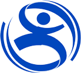

Організатори

Ярослав Кондюх
Керівник змагань, президент СК "Ультра".
Тел. +380974114951, +380939426112.
c_ultra@ukr.net

Початок змагань о 10.00,
урочисте нагородження о 13.00
| Час | Опис |
|---|---|
| 16.00 | Початок роботи Секретаріату змагань. Видача нагрудних номерів, чіпів, оплата стартових внесків. PASTA PARTY. |
| Час | Опис |
|---|---|
| 7.00 | Початок роботи Секретаріату змагань. Видача нагрудних номерів, чіпів, оплата стартових внесків. |
| 9.30 | Завершення реєстрації |
| 9.30 | Урочисте відкриття змагань. (місце уточнюється) |
| 10.00 | Старт змагань |
| 13.00 | Завершення ліміту часу |
| 13.30 | Урочисте нагородження переможців та призерів |
| 13.45 | Закриття змагань |
Обов’язковою умовою участі у змаганнях є медична довідка про задовільний стан здоров’я та заява із особистим підписом, який свідчить про те, що кожен учасник напівмарафону бере участь у змаганнях на власну відповідальність.
Оплатити стартовий внесок можна: Перерахувавши кошти на картку ПриватБанку 4149 4978 3489 1931 (Підлужна Ірина Романівна) до 10 квітня 2016 року, або у Секретаріаті змагань 23 квітня 2016. Стартовий внесок становить 200 грн до 15 лютого 2016 року.
Учасником змагань може бути будь-яка особа, якій на день проведення змагань (24 квітня 2016 року) виповнилось 18 років.
Ознайомитись із положення про проведення 21-кілометрового пробігу "Львівський напівмарафон 2016"
Регламентований час на подолання дистанції – 3 год. Учасники які не зможуть подолати дистанцію у регламентований час повинні зняти нагрудний номер та залишити трасу пробігу.
Організатори змагань забезпечують медичне обслуговування учасників під час змагань (лікар на старті та фініші), супровід каретою швидкої допомоги
Ярослав Кондюх
Керівник змагань, президент СК "Ультра".
Тел. +380974114951, +380939426112.
c_ultra@ukr.net